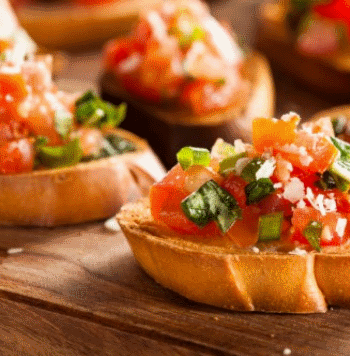

|  |
БрускетиВреме за приготвяне: 40 минути
|
Разрежете наполовина по дължина филенца от аншоа. Настържете сиренето. Поставете скилидките чесън в тиган със студена вода. След като заври, оставете да кипи в продължение на 3-4 минути. Отцедете. Поставете доматите в глинено гърне заедно с аншоата, каперсите, чесъна и зехтина. Подправете с черен пипер. Печете на 220 °С около 15 минути. Поръсете с оцет. Междувременно разрежете чабатата наполовина по дължина и я разделете на четири порции. Разрязаните страни покрийте със сготвената доматена смес. Сервирайте тоста още горещ. Отгоре поръсете с пармезан. За да придадете завършек и пълнота на кулинарното си доматено произведение, на финала не забравяйте да поръсите с босилек.